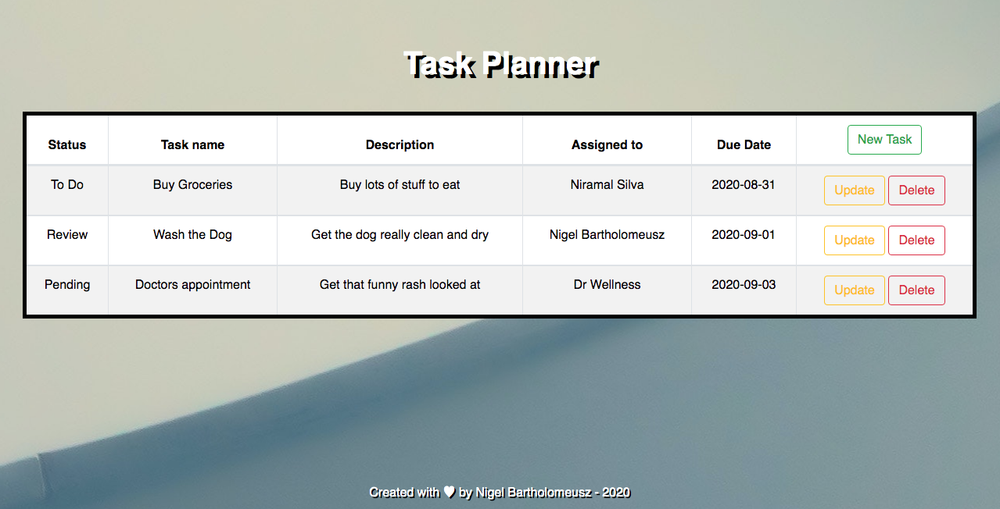

Nigel Bartholomeusz
Cloud Prcaticioner / Web Developer / UX Designer

About Me
Hi ,
my name is Nigel.
I have over 20 years experience across mainframe systems engineering, certified in cloud principles, web development and business management with a strong focus on using design and technology to create effective systems and products for users.
Having worked for myself, clients as a consultant and in-house with organisations, I am skilled at understanding the brief and implementing, integrating and administering digital solutions.
I pick up systems and processes quickly and pride myself on my ability to connect and collaborate with both peers and stakeholders.
My varied experience means I think about projects on the whole, from all angles. I'm a creative thinker with an innovative approach to problem solving and am confident in owning projects or tasks, rolling up my sleeves to get the job done!
Work Experience
- Cloud Practioner - AWS / Azure Certifed.
- Mainframe Systems Engineer - over 20 years experience.
- Website Developer - more than 5 years experience.
- UX Designer - more than 3 years experience.
- Business Owner / Startup Creator - over 10 years experience.
Projects
Project 1 : Yes Nigel Art
A responsive website built to showcase some of the abstact art I have created. Built with HTML / Bootstrap, CSS and Javascript. Using some video as a background for some of the pages.
Project 2 : Learning ABC's
A tool for children to learn the alphabet. Built with HTML / Bootstrap, CSS and Javascript.

Project 3 : Calculator
A basic calculator. Built using HTML, CSS and JavaScript.

Project 4 : Task Planner
A tool for adding , deleting and updating tasks to do. Built with HTML / Bootstrap, CSS and JavaScript, writing the data to local storage.
Interests
- Technology - Reading about emerging technologies, problem solving, creating digital solutions.
- Art / Design / Architecture - Creating, reading about, admiring, collecting.
- Food - Cooking and eating different cuisines.
-
Motorbikes - Tinkering with
Cafe Racer Style
motorbikes. - Music - Listening to and creating.
- Outdoor activities - Tennis, golf, skiing, hiking, surfing, dog walking.


Contact
Contact via email nigelbartholomeusz@gmail.comProfile Links :